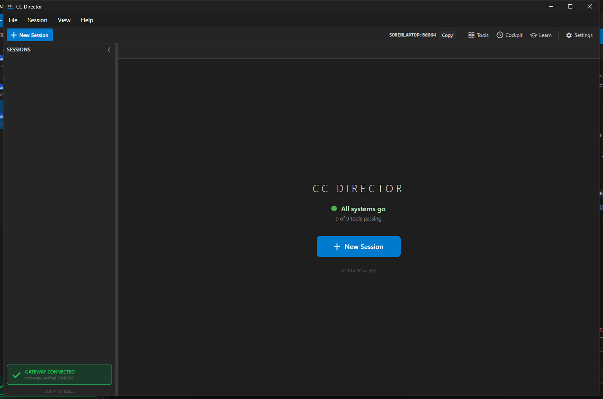

Verified independently of the Developer artifacts: fresh checkout of branch
issue-697-ephemeral-fallback (HEAD 61aca559), own full-solution build,
own test run, and own running Director (slot 7, release build) - no dev binary or dev screenshot reused.
| AC | Expected | Actual (my evidence) | |
|---|---|---|---|
| AC1 - fallback keeps the API up | Range full -> bind a port outside 7879-7898; GET /sessions -> 200. |
QA Director (all 20 ports held) logged Kestrel listening on http://127.0.0.1:56064
(56064 ∉ range); GET http://127.0.0.1:56064/sessions -> HTTP 200 body=[]; UI
header shows SORENLAPTOP:56064. Also: host integration test green. |
PASS |
| AC2 - remote path uses the ephemeral port | Serve self-provisions on the ephemeral port; Gateway registration advertises it. | Log: mapped --https=56064 -> http://localhost:56064 and
Registered: status=201, endpoint=...:56064. UI: GATEWAY CONNECTED - two-way
verified. |
PASS |
| AC3 - no false "down" on success | No startup error / "free a port" notice on a successful fallback. | No Control API DOWN / ReportStartupFailure in the log. UI shows
All systems go (not the degraded Control-API indicator). |
PASS |
| AC4 - true failure still reported | If even the ephemeral bind fails, a Control-API-down error still surfaces. | review-code lens: the fallback is inserted before the existing throw path, which is
unchanged; the existing ReportStartupFailure_SetsErrorAndRaisesEvent test is
green in my run. |
PASS |
| AC5 - covered by a test | A test drives "range exhausted" and asserts an ephemeral port. | My independent run: StartAsync_FixedRangeExhausted_FallsBackToEphemeralPortAndStaysListening
green (18/18 in the ControlApiHost + PortAllocator filter). |
PASS |
| AC6 - zero-warning build + green suite | Warning-free build; green tests. | My full-solution build: Build succeeded. 0 Warning(s) 0 Error(s). Tests 18/18. |
PASS |
[ControlApiHost] Fixed range 7879..7898 exhausted; falling back to an ephemeral loopback port [ControlApiHost] Kestrel listening on http://127.0.0.1:56064 (loopback only; remote access via Tailscale Serve) [TailscaleServeSelfProvisioner] mapped --https=56064 -> http://localhost:56064 [GatewayClient] POST /directors/register: endpoint=https://sorenlaptop.taildb08ed.ts.net:56064 [GatewayClient] Registered: status=201, endpoint=https://sorenlaptop.taildb08ed.ts.net:56064 GET http://127.0.0.1:56064/sessions -> HTTP 200 body: []

docs/cencon/ architecture/security drift (same loopback-only + Tailscale Serve posture); no blocking DT rule affected (the raw port stays loopback-only).VERIFIED - all acceptance criteria met.